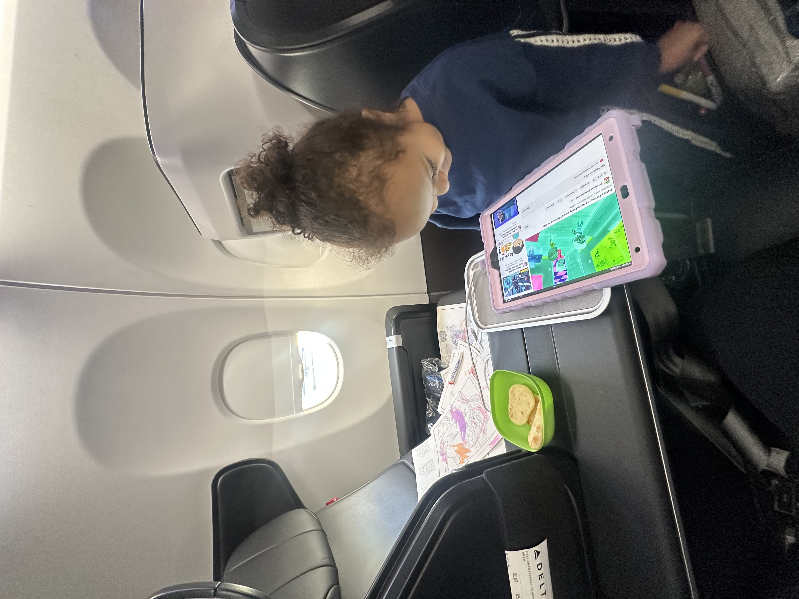

Digital Operations Manager and Streamig Media Professonal pivoting to UI Accessibilty. With a robust background in digital operations and streaming media platforms, I am bridging operational excellence with inclusive design. Inspired by my daughter Chloe, and her unique technology journey, I have witnessed firsthand the gaps in how digital spaces accomodate diverse minds. This realization fueled my pivot into full-stack web development at Fullstack Academy. My mission is to eliminate barriers and champion for technology equity and cognitive accessibility so that neurodivergent individuals are active, empowered participants in the digital future.
When you watch a four-year-old navigate the digital world, the accessibility gaps instantly come into focus. What adults accept as normal—cluttered interfaces, sudden flashing pop-ups, tiny touch targets, and rigid, unforgiving response timers—become insurmountable walls for a young child, especially when compounded by neurodivergence. For children like my daughter Chloe, standard educational apps and touchscreens often demand an advanced executive function and sensory tolerance that simply hasn't developed yet. When digital spaces lack predictable navigation, clear visual hierarchy, and sensory-friendly design, they inadvertently shut tech-native children out before their learning journey even begins. Building inclusive software starts with ensuring the very first digital touchpoints are intuitive, calm, and welcoming to every developing mind.
